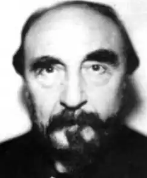
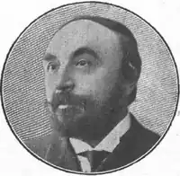

Жозеф-Анрі Роні-старший — широко відомий класик французької фантастики, який писав на рубежі двох століть, справжнє ім'я якого Жозеф Анрі Оноре Боекса (Joseph Henri Honoré Boex). Народився в 1856 році в Брюсселі в родині, родовід якої з'єднала кров бельгійців, голландців, іспанців, французів. Трьома роками пізніше у нього з'явився брат Серафін Жюстен Франсуа. Їм судилося увійти в літературу під іменем Роні — так називалася село поблизу Парижа, чимось сподобалася своєю назвою для псевдоніма.
Отримавши блискучу класичну освіту, Анрі Боекс почав рано заробляти собі на життя, працюючи то наставником в англійському навчальному закладі, то телеграфістом. Нестримна тяга до літератури змусила його зайнятися літературною діяльністю; перша книга, яка не мала відношення до фантастики, була написана англійською мовою. Незабаром він влаштувався в Парижі, де опублікував повість "Ксіпехузи" (1887), яку доброзичливі критики тут же зіставили із знаменитою "Орлей" Мопассана.
Спочатку він підписував свої твори як Ж.-А.Роні; коли в Париж приїхав його молодший брат Серафін Жюстен Франсуа Боекс, почався нетривалий період їх спільної творчості під тим же псевдонімом. Перша їхня спільна публікація — "Маніфест п'яти", — вийшла в світ в 1887 році. Співпраця братів тривало до 1907 або 1908 роки; за цей час були написані такі швидко стали знаменитими книги, як, що належали до "доісторичної" тематиці романи "Вамірех" (1892) і "Ейрімах" (1896), а також ряд новел, як доісторичних (наприклад, "Глибини Кійамо", 1896 ), так і науково-фантастичних ( "Інший світ", 1898 і ін.). Коли брати посварилися (офіційною причиною послужили розбіжності в характері), з'явилися два окремих письменника — Роні-молодший і Роні-старший. Якщо перший з них практично не залишив після себе помітного сліду в літературі, то другий увійшов в історію французької фантастики багатьма своїми творами. Слід зазначити, наприклад, такий шедевр, як "Смерть Землі" (1908), в якому вперше описуються вторглися на Землю представники неорганічної феромагнітної життя. Роні-старший захоплювався загадками людської психіки, писав про міжпланетні подорожі (зокрема, саме йому належить пріоритет у винаході терміна "астронавтика"). Незабаром його прийняли до складу комісії з присудження Гонкурівської премії (президент Академії Гонкуров з 1926 р), членом якої він залишався до самої смерті. Він продовжував писати користуються незмінним успіхом у читачів доісторичні романи — "Війна за вогонь" (1909), "Гігантська кішка" (1920), "Хельевор з Блакитний річки" (1930); тим не менш, головним напрямком його творчості залишалася наукова фантастика. Він був одним із творців роману катастроф, зобразивши в романі "Таємнича сила" зустріч Землі з ефірним потоком, що викликав новий льодовиковий період. Крім того, він написав такі фантастичні твори, як "Загадка дорогоцінного каменю" (1917), "Дивовижна подорож Гертона Айронкастля" (1922), "Надприродний вбивця" (1924), "Навігатори нескінченності" (1927), "Супутники Всесвіту" (1934), "Вампір Бетнал Гріна" (1935). В свого довгого життя Жозеф Роні встиг багато. Людина величезної фізичної сили, любитель життя у всіх її проявах, він залишив велике літературна спадщина, де, крім вищезгаданого, є і романи про античність, і праці з фізики і хімії (їх високо оцінив знаменитий П'єр Кюрі). Зокрема, незабаром після відкриттів Ейнштейна, наприклад він написав цікавий нарис з історії теорії відносності — "Простір і час". Завдяки інтелектуальному багатству своїх творів та їх високохудожнього виконання, Роні-старший є одним з перших письменників, які писали на французькій мові, який відірвався від літератури дитячих фантазій і ввів справжню наукову фантастику у велику літературу.